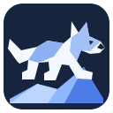
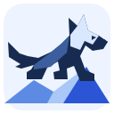

01 · Summit stance
Transparent mark for use beside the Baltor wordmark. The dog and the ice remain separate shapes.
Favicon and grayscale preview
32 · 16 · gray 32
Latest: Open the mature husky profile and negative-space variations, with dedicated 16- and 32-pixel SVGs.
Exploratory originals. The same vector is shown at 128 pixels, favicon scale, and in a grayscale preview. No concept is a production brand decision.
Transparent mark for use beside the Baltor wordmark. The dog and the ice remain separate shapes.
Square, forward-facing mark. Facial symmetry is the main small-size cue.
Square racing stance with a sloped ice peak. The dark field gives the dog a clear outline.

Longer muzzle, upright ears, and an uphill athletic stance informed by the owner's reference strip.
